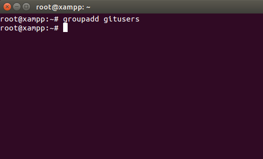
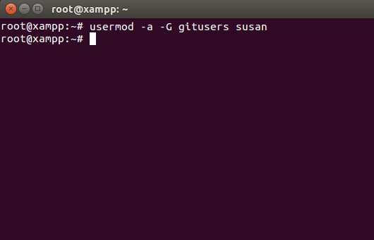
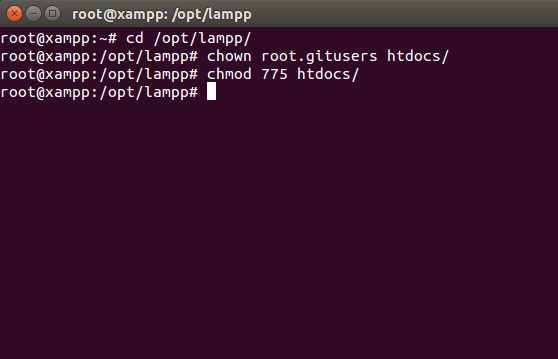
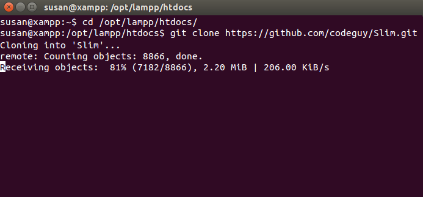
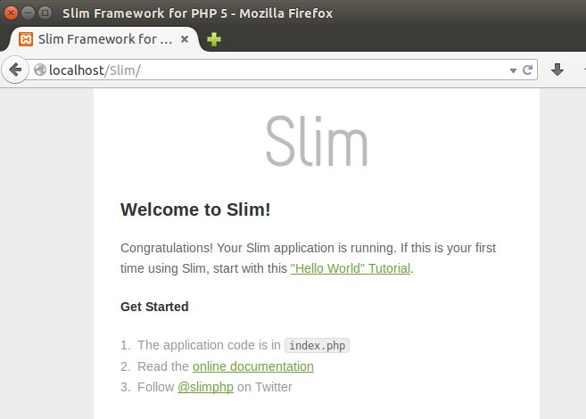

Deploy an Application Using Git
Git is a popular distributed version control system. As you work with XAMPP, you might often find yourself needing to download and install applications or code libraries from a developer’s public git repository.
This guide walks you through the process, showing you how to use a git client to transfer code from a public online git repository to your XAMPP server. As an example, this guide assumes that you wish to download the latest version of Slim, a popular PHP micro-framework for Web application development that also has its own Github repository. NOTE: This guide uses the command-line git client for Linux. If you don’t already have this, you can install it easily by running the command sudo apt-get install git or sudo yum install git from your Linux terminal.
To download files with git, you must first ensure that you have privileges to write to the htdocs/ subdirectory of the XAMPP installation directory (typically, /opt/lampp). Follow these steps:
-
Open a new Linux terminal and ensure you are logged in as root.
-
Create a new group named gitusers. This group will contain those user accounts allowed to download files via git.
groupadd gitusers
 -
Add your account (in this example, susan) to the new group. Add other users if needed.
usermod -a -G gitusers susan
 -
Change the ownership and permissions of the htdocs/ subdirectory so that it is writable by the the new gitusers group.
cd /opt/lampp
chown root.gitusers htdocs
chmod 775 htdocs
If you’re using XAMPP in a single-user scenario and there will only be one user downloading files via git, you can skip creating a new group and instead simply transfer full ownership of the htdocs/ directory to that user. To do this, use a command like chown susan.susan htdocs.
To download Slim (or any other application) from its git repository, follow these steps:
-
Ensure that your Apache server is running and that you are logged in as a member of the gitusers group.
-
Obtain the repository’s clone URL. On Github, this can be easily obtained by visiting the project’s Github page and copying the clone URL from the right side of the page. For third-party or private git repositories, you can obtain the clone URL by asking the project team directly. Make a note of the clone URL, as you’ll need it in subsequent steps.
-
Open a new Linux terminal.
-
Change to the htdocs/ subdirectory of your XAMPP installation directory (typically, /opt/lampp). Use the following command to clone the remote repository, remembering to replace the clone URL in the example below with the URL you obtained in the first step.
git clone https://github.com/codeguy/Slim.git
The git client will begin downloading the code from the remote repository.
-
Once the process is complete, you should see a new directory containing the downloaded code, and you can now begin using it.
In this particular case, since the Slim framework includes a starter application, you can simply browse to the URL http://localhost/Slim and you should see the example application’s welcome page, as shown below.

| You can use the git command-line client to create a new branch of the codebase should you wish to make any changes to it. If you have appropriate privileges, you can also commit your changes back to the remote repository. Learn more about the git command-line client. |